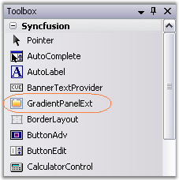
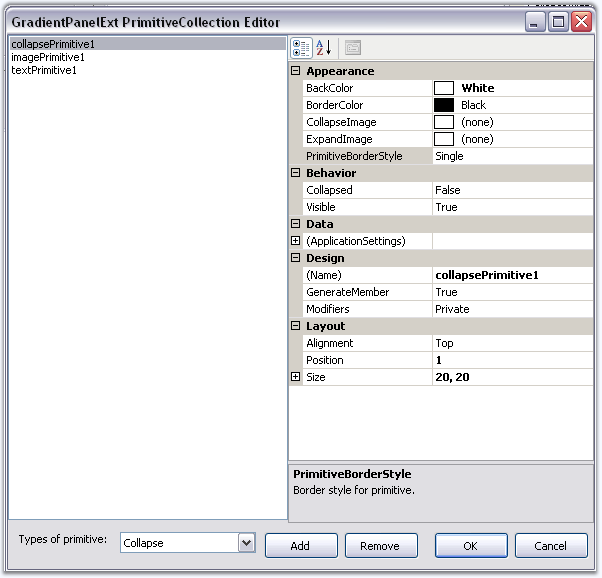
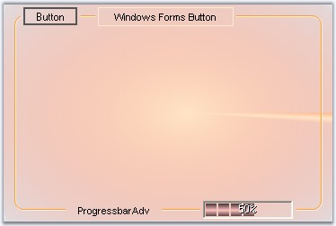

This section will guide you to create a GradientPanelExt through designer and also through programmatical approach.
The following steps are involved in creating the GradientPanelExt through the designer.
1. Create a new Windows Application.
2. Drag the GradientPanelExt from the toolbox on to the windows application form.

Figure 398: GradientPanelExt in the Toolbox
3. Gradient colors for the panel can be set by defining the gradient styles and colors, using the Color Collection Editor.
4. Primitives can be added to GradientPanelExt 's border using the GradientPanelExt PrimitiveCollection Editor, that can be accessed using the Primitives property.

Figure 399: GradientPanelExt Primitive Collection Editor
5. The primitive alignment and position can be defined here.
 Note: The properties for the primitives
can be set individually using the property grid as well.
Note: The properties for the primitives
can be set individually using the property grid as well.
6. Build and run the application.

Figure 400: GradientPanelExt with Host Primitives
The following steps will guide you to create a GradientPanelExt through code.
1. Create a C# or VB.NET application through Visual Studio and switch to the code view.
2. Add the Syncfusion.Shared.Base, Syncfusion.Shared.Windows, Syncfusion.Tools.Base and Syncfusion.Tools.Windows assembly references.
3. Include the namespace for the Tools Package.
|
[C#]
using Syncfusion.Windows.Forms.Tools; |
|
[VB.NET]
Imports Syncfusion.Windows.Forms.Tools |
4. Create an instance GradientPanelExt and add it to the Windows Form, defining its various properties and primitives.
|
[C#]
//Adding the GradientPanelExt GradientPanelExt gpe = new GradientPanelExt(); gpe.Dock = DockStyle.Fill; gradientPanelExt1.CornerRadius = 10; this.Controls.Add(gpe);
//Defining Gradient Colors gpe.BackColor = System.Drawing.Color.Transparent; gpe.BackgroundColor = new Syncfusion.Drawing.BrushInfo(Syncfusion.Drawing.GradientStyle.PathEllipse, new System.Drawing.Color[] { System.Drawing.Color.Bisque, System.Drawing.Color.LightSalmon,System.Drawing.Color.LightCoral});
//button1 Button button1 = new Button(); button1.FlatStyle = System.Windows.Forms.FlatStyle.Popup; button1.Text = "Button";
//hostPrimitive1 HostPrimitive hostPrimitive1 = new HostPrimitive(); hostPrimitive1.HostControl = button1;
//progressBarAdv1 ProgressBarAdv progressBarAdv1= new ProgressBarAdv(); progressBarAdv1.ProgressStyle = Syncfusion.Windows.Forms.Tools.ProgressBarStyles.Tube;
//textPrimitive1 TextPrimitive textPrimitive1= new TextPrimitive(); textPrimitive1.Alignment = Syncfusion.Windows.Forms.Tools.Alignment.Bottom; textPrimitive1.Text = "ProgressbarAdv";
//textPrimitive2 TextPrimitive textPrimitive2 = new TextPrimitive(); textPrimitive2.Text = "Windows Forms Button";
//Adding Primitives gpe.Primitives.AddRange(new Syncfusion.Windows.Forms.Tools.Primitive[] { hostPrimitive1, textPrimitive1, textPrimitive2}); |
|
[VB.NET]
'Adding the GradientPanelExt Private gpe As GradientPanelExt = New GradientPanelExt() Private gpe.Dock = DockStyle.Fill Private gradientPanelExt1.CornerRadius = 10 Me.Controls.Add(gpe)
'Defining Gradient Colors Private gpe.BackColor = System.Drawing.Color.Transparent Private gpe.BackgroundColor = New Syncfusion.Drawing.BrushInfo(Syncfusion.Drawing.GradientStyle.PathEllipse, New System.Drawing.Color() { System.Drawing.Color.Bisque, System.Drawing.Color.LightSalmon, System.Drawing.Color.LightCoral})
'button1 Private button1 As Button = New Button() Private button1.FlatStyle = System.Windows.Forms.FlatStyle.Popup Private button1.Text = "Button"
'hostPrimitive1 Private hostPrimitive1 As HostPrimitive = New HostPrimitive() Private hostPrimitive1.HostControl = button1
'progressBarAdv1 Private progressBarAdv1 As ProgressBarAdv = New ProgressBarAdv() Private progressBarAdv1.ProgressStyle = Syncfusion.Windows.Forms.Tools.ProgressBarStyles.Tube
'textPrimitive1 Private textPrimitive1 As TextPrimitive = New TextPrimitive() Private textPrimitive1.Alignment = Syncfusion.Windows.Forms.Tools.Alignment.Bottom Private textPrimitive1.Text = "ProgressbarAdv"
'textPrimitive2 Private textPrimitive2 As TextPrimitive = New TextPrimitive() Private textPrimitive2.Text = "Windows Forms Button"
'Adding Primitives gpe.Primitives.AddRange(New Syncfusion.Windows.Forms.Tools.Primitive() {hostPrimitive1, hostPrimitive2, textPrimitive1, textPrimitive2}) |
5. Run and build the application to view the output.